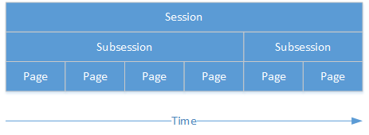
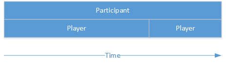
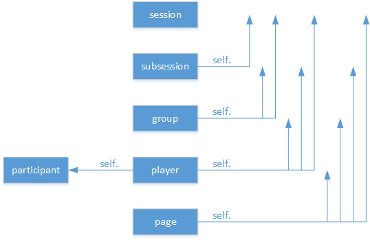

2018.08.18
pip3 install -U otreevars_for_template --> 填資料 --> 發送 --> 執行 before_next_page --> 下一頁在 otree 裡，一場實驗稱為一個 Session。一場實驗有許多階段，一個階段稱為一個 Subsession。每個階段有許多步驟，每個步驟用一個頁面呈現，稱為 Page。

來參加實驗的受試者稱為 Participant，受試者在每一個階段的實驗裡，可能跟其他受試者編為一組，稱為 Group，而受試者在實驗中扮演的角色，稱為 Player。

在 Python 裡，所有東西都是物件(object)，類別(class)為物件的模板，物件是類別的一個例子。凡是物件都有屬性(attribute)跟方法(method)，屬性類似變數(variable)，而方法類似函數(function)。從資料結構來看，可以將類別理解為一個表格，物件即表格中的一列資料，屬性即資料的欄位，方法則是對資料的運算。
otree 裡的 Session、Subsession、Page、Group、Player、Participant 都是物件，都可以設定各自的屬性與方法。而在 otree 裡，這些物件有上下層關係。它們的關係如下圖：

給定某個物件，我們稱此物件為自己(self)。上層物件對自己而言，是自己的屬性；而自己可以透過方法取得下層物件。譬如給定某個 Group 為 self，self.subsession 這個屬性用來表示此 Group 所在的 Subsession，而 self.get_players() 這個方法可以取得此 Group 裡的 Player。更詳盡的範例如下：
範例：models.py
class Subsession(BaseSubsession):
def example(self):
# current subsession object
self
# parent objects
self.session
# child objects
self.get_groups()
self.get_players()
# accessing previous Subsession objects
self.in_previous_rounds()
self.in_all_rounds()
class Group(BaseGroup):
def example(self):
# current group object
self
# parent objects
self.session
self.subsession
# child objects
self.get_players()
class Player(BasePlayer):
def example(self):
# current player object
self
# method you defined on the current object
self.my_custom_method()
# parent objects
self.session
self.subsession
self.group
self.participant
self.session.config
# accessing previous player objects
self.in_previous_rounds()
# equivalent to self.in_previous_rounds() + [self]
self.in_all_rounds()範例：pages.py
class MyPage(Page):
def example(self):
# current page object
self
# parent objects
self.session
self.subsession
self.group
self.player
self.participant
self.session.config先進入 your_project_name 資料夾, 輸入
$otree reserdb
$otree runserver$git add .
$git commit -am 'my comment'
$git push heroku master
$heroku run otree resetsb ## 重設資料庫
$heroku open